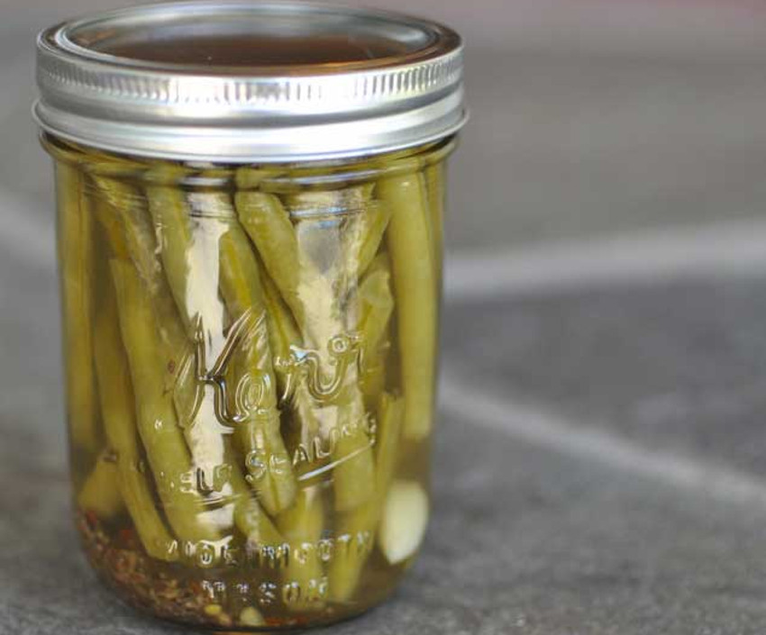
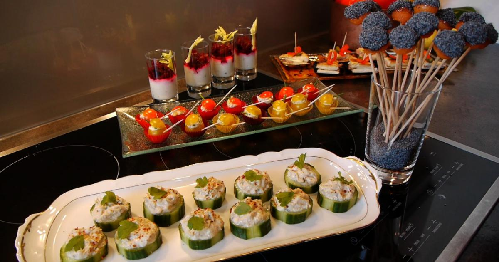
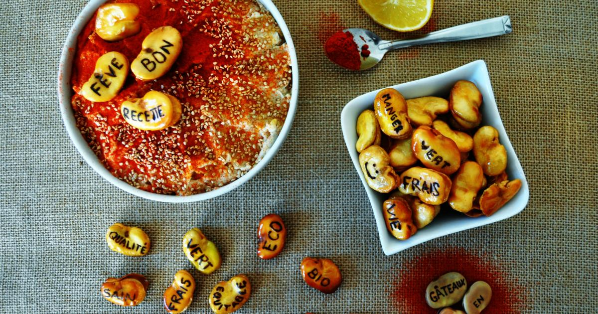

Cuisine et Recettes faciles et rapides du monde - Madame Figaro
2021.03.27 00:16
Aller au contenu principal Menu Rechercher
Rubriques et services du Figaro
Politique International Société Vox Économie Sport Culture Voyage Style Madame Figaro Live
Rubriques et services du Figaro
Figaro Magazine La Vérification Figaro Étudiant Faits divers Santé Sciences Fig Data Tech et web Bourse Figaro Immobilier Art de vivre Automobile Vin Langue française Golf Histoire Programme TV Jardin Figaroscope Carnet du jour Guide achat ServicesNos journaux et magazines
Les sites du Groupe Figaro
Se connecter Mon compte Mon espace personnel Mes newsletters Mes commentaires S'abonner Aide et contact Se déconnecter Lire le magazine Style Beauté & Bien-être Société & Business Art de vivre Cuisine Culture Le Petit Club Vidéos & Podcasts Astro Mode Actu mode Tendances mode Mode enfants Défilés Prêt-à-porter Haute couture Homme Croisières Tous les créateurs Bijoux et montres Tendances bijoux Agenda bijoux Shopping bijoux Coups de coeur bijoux Saga bijoux Mariage Tendances mariage Robes & tenues Bijoux & accessoires de mariage Beauté Maquillage et soins Cheveux Parfum Prix Beauté Stars Bien-être Forme et détente Nutrition Psycho Education Guide des prénoms Société Actu société Portraits Business Business with Attitude Actu business Coaching carrière Business détox Business style Duo, le succès de l entrepreneuriat féminin Déco & Design Actu déco & design Inspirations déco Design Évasion Idées voyages City guide Reportages Trophée Golf Madame Figaro Madame aime Les adresses incontournables Cuisine Actu cuisine Tendances cuisine Rencontres Recettes Nos sélections de recette Idées menu Recettes de chef Recettes par ingrédient Idées entrées Idées plats Idées desserts Sélection des meilleurs produits Célébrités Soirées Culture Cinéma Festival de Cannes César 2021 : une folle envie de cinéma Musique Privilèges Petit Club Nos offres privilèges mode Nos offres privilèges beauté Nos offres privilèges art et culture Nos offres privilèges lifestyle Podcasts Revue Désirs Happiness therapy No pause Vidéos MAD Horoscope occidental Horoscope du jour Horoscope de la semaine Horoscope du mois Horoscope chinois Horoscope chinois du jour Horoscope chinois de la semaine Horoscope chinois du mois Compatibilité des prénoms Numérologie AccueilCuisine et recettes
Idées recettes Recherche par ingrédients Apéritif dînatoire Gratins Recettes d'hiver Recettes de chef Cuisine et recettesComment savourer une baguette fraîche en temps de couvre-feu ?
Facebook Twitter PinterestVOUS AIMEZ
Ces fruits et légumes que l'on peut consommer non bio RencontresAnne-Sophie Pic : "Une mini-cérémonie du thé m'apaise et me donne de l'énergie"
La chef multi-étoilée a créé un menu hautement créatif avec sa sommelière Paz Levinson Facebook Twitter Pinterest Nos sélections de recettes29 recettes du chef Cyril Lignac pour briller derrière les fourneaux
À la viande, au poisson, végétales, sucrées ou salées Facebook Twitter Pinterest Cuisine et recettesLa purée de dattes, l'alternative saine et gourmande au sucre raffiné
Facebook Twitter PinterestNos plus belles recettes à base de poires
Voir le diaporama 4 photos Facebook Twitter Pinterest Cuisine et recettesComment faire sa pâte à tartiner maison
Ici, pas d'huile de palme à l'horizon Facebook Twitter Pinterest Cuisine et recettesCinq erreurs souvent commises qui ruinent une mayonnaise maison
Conseils et astuces d'un chef pour ne plus rater votre mayonnaise Facebook Twitter Pinterest Tendances cuisineRessuscitée aux États-Unis, la piquette en pleine reconquête
Retour avec des spécialistes sur une tendance très populaire aux États-Unis qui commence à gagner l'Hexagone Facebook Twitter Pinterest Nos sélections de recettesLes meilleures recettes de cookies, sucrées et salées
Au thé matcha, au reblochon, aux graines de chia... Facebook Twitter PinterestTop recettes
Vos préférées Nouvelles recettesBûche plaisir intense
Bûche plaisir intense
Cigares de feuilles de brick au chèvre, épinards et courgettes
Chou-fleur riz sauté
Tartare de truite et asperges vertes
Brioches grillées aux légumes
Tartelettes Fleur de cassis sans gluten
Actu cuisineLa technique imparable de Kate Middleton pour faire sauter les crêpes
Facebook Twitter Pinterest Nos sélections de recettesLes meilleures recettes pour Mardi gras
Plutôt bugnes ou beignets ? Facebook Twitter Pinterest Actu cuisinePourquoi mange-t-on des beignets le jour de Mardi gras ?
L'anecdote pour briller lors du goûter demain Facebook Twitter Pinterest Actu cuisineComment la présidence de Donald Trump a affecté le système alimentaire américain
Facebook Twitter PinterestSaint-Valentin : 17 recettes raffinées pour célébrer l'amour
Voir le diaporama 4 photos Facebook Twitter Pinterest Nos sélections de recettesLe Nouvel An chinois, entre recettes traditionnelles et revisitées
Nems, nouilles sautées, curry de crevettes, autant de bonnes recettes pour entrer dans l'année du Buffle de métal Facebook Twitter Pinterest Actu cuisineMichelle Obama anime une émission culinaire pour enfants et c'est réconfortant
L'ex-First Lady anime un programme familial antimalbouffe et 100% plaisir Facebook Twitter Pinterest Cuisine et recettesNouvel An chinois : 4718 ans de coutumes et de spécialités culinaires
Voici venue l'année du rat Facebook Twitter Pinterest Actu cuisineDe "Top Chef" à l'étoile Michelin, Mory Sacko, la révélation gastronomique de 2020
Facebook Twitter PinterestPhilippe Conticini, Cyril Lignac, Christophe Michalak... Les créations gourmandes pour la Saint-Valentin
Voir le diaporama 4 photos Facebook Twitter PinterestArticles cusine les + lus
Hélène Darroze : "Certaines femmes pleurent quand elles arrivent dans mon restaurant" Facebook Twitter Pinterest Ces fruits et légumes que l'on peut consommer non bio Facebook Twitter Pinterest Anne-Sophie Pic : "Une mini-cérémonie du thé m'apaise et me donne de l'énergie" Facebook Twitter Pinterest Nos meilleures recettes irlandaises pour la Saint-Patrick Facebook Twitter Pinterest Chocolats de Pâques : les plus belles créations à déguster en 2021 Facebook Twitter Pinterest Cuisine et recettesSimples et pratiques : les astuces pour obtenir les crêpes parfaites
Non, la pâte ne lève pas, non, la bière n'est pas obligatoire Facebook Twitter Pinterest Cuisine et recettesComment reconnaître un vrai bon flan pâtissier ?
Le flan dans son plus simple appareil Facebook Twitter Pinterest Cuisine et recettesCinq erreurs fréquentes à ne plus commettre lorsque l'on fait fondre du chocolat
Faire fondre son chocolat à la casserole : c'est non Facebook Twitter Pinterest Tendances cuisineLa bergamote, ce fruit acidulé méconnu, très prisé en temps de pandémie
Alors que le mot "coronavirus" est encore sur toutes les lèvres, ce fruit puissant, connu pour ses vertus, refait surface Facebook Twitter Pinterest Nos sélections de recettesFaciles et rapides, nos plus belles recettes de crêpes pour fêter la Chandeleur
À déguster en famille ou entre amis Facebook Twitter Pinterest Actu cuisineONA, le tout premier restaurant vegan étoilé de France
Une étoile qui prouve que la cuisine vegan est ultracréative, sophistiquée, synonyme de plaisir Facebook Twitter Pinterest Actu cuisineHélène Darroze et Clare Smyth, deux femmes chefs triplement étoilées, une première dans l'histoire du Guide Michelin
C'est la première fois que deux femmes sont promues trois étoiles en même temps Facebook Twitter Pinterest Actu cuisineMieux nourrir son bébé : les conseils et idées recettes d'Angèle Ferreux-Maeght
Rencontre avec la papesse de l'alimentation saine qui publie un nouvel ouvrage, "Ma cuisine naturelle pour bébé" Facebook Twitter Pinterest Tendances cuisineL'onigiri, le délicieux concurrent du sushi qui met les Français en appétit
Zoom sur ce néo-snack venu du Japon Facebook Twitter Pinterest Cuisine et recettesGuide Michelin 2021 : 18 restaurants étoilés à moins de 30 euros
Sélection d'adresses partout en France à tester dès la réouverture des restaurants Facebook Twitter Pinterest Tendances cuisineLa nouvelle façon de servir la soupe
Pour un lendemain de fête, une déclaration d'amour ou d'impôt, elle est si réconfortante ! Facebook Twitter Pinterest Cuisine et recettesLe mochi, la galette des Rois des Japonais à savourer en janvier
Selon la tradition nippone, le mochi se déguste tout au long du mois de janvier Facebook Twitter Pinterest Cuisine et recettesCombien de temps garder (sans danger) ses restes alimentaires au réfrigérateur ?
Au bout de combien de temps est-il préférable de jeter ce morceau de viande qui traîne au fond du réfrigérateur ? Facebook Twitter Pinterest Cuisine et recettesSix erreurs à éviter lorsque l'on fait cuire des pommes de terre
Mode d'emploi avec Clément Chicard, chef du Bouillon Pigalle Facebook Twitter PinterestDouze spécialités montagnardes à déguster par temps froid
Voir le diaporama 4 photos Facebook Twitter PinterestEn ce moment
On vous offre votre prochaine routine beauté ? Facebook Twitter Pinterest Retrouvez le gel-en-eau désaltérant Origins avec votre magazine Madame Figaro Facebook Twitter Pinterest Revue, Désirs, Happiness Therapy... Les podcasts Madame Figaro s'invitent dans vos oreilles Facebook Twitter Pinterest Nos sélections de recettes15 recettes gourmandes à base de lentilles pour faire le plein d'énergie cet hiver
Facebook Twitter Pinterest Cuisine et recettesComment faire sa galette des Rois maison
Mode d'emploi du chef pâtissier Nicolas Paciello Facebook Twitter Pinterest Cuisine et recettesComment reconnaître une bonne galette des Rois ?
Conseils et astuces de professionnels Facebook Twitter Pinterest Cuisine et recettesÉpiphanie 2021 : les meilleures brioches et galettes des Rois
Facebook Twitter Pinterest Tendances cuisinePois chiche, café, cuisine anti-gaspi... Les 7 tendances food qui raviront nos papilles en 2021
Une année culinaire qui s'annonce réconfortante Facebook Twitter Pinterest Cuisine et recettesTout ce qu'il faut savoir pour réussir sa purée de pommes de terre maison à la manière de Joël Robuchon
Suivez le guide pour réussir la célèbre purée du chef Joël Robuchon Facebook Twitter Pinterest Nos sélections de recettesEn tarte, en maki ou en velouté, le poireau fait son grand retour
Diététiques, réconfortantes, chic ou faciles, découvrez notre déclinaison de recettes Facebook Twitter Pinterest Tendances cuisineTout savoir sur le lait cru, cet "or blanc" qui valorise nos terroirs
En bouteille, en fromage à raclette ou en crème pâtissière... Zoom sur ce produit crémeux au goût prononcé, à savourer du petit-déjeuner au dessert Facebook Twitter Pinterest Cuisine et recettesLentilles, pois chiches, haricots secs : comment cuire les légumineuses ?
Dosage, trempage, cuisson... Voici les étapes à suivre pour préparer vos légumes secs avec succès Facebook Twitter Pinterest Actu cuisineJessica Préalpato : "Un Paris-Brest à la pistache n'est plus un Paris-Brest"
Facebook Twitter Pinterest Cuisine et recettesComment ouvrir des huîtres sans y laisser un doigt ?
Avec le bon geste et le bon matériel, ce n'est pas si compliqué Facebook Twitter Pinterest Nos sélections de recettesNos meilleures idées de recettes sucrées et salées à la banane
Au menu : banana split, tarte et même hamburger Facebook Twitter PinterestLes Fromages de Suisse : le goût du partage
Facebook Twitter Pinterest Cuisine et recettesChoucroute, raclette, blanquette... Ces plats que l'on n'aurait jamais imaginé se faire livrer à la maison
Avec le confinement, l'offre de restauration à domicile se développe comme jamais. Découvrez notre sélection parisienne Facebook Twitter Pinterest Actu cuisineEn vidéo, un chef de Romorantin se moque gentiment des Américains pour vanter ses burgers
Et sa recette 100% française est particulièrement appétissante Facebook Twitter Pinterest Nos sélections de recettesNos meilleures recettes de pot-au-feu pour savourer le temps
Ce n'est pas seulement dans les vieux pots que l'on fait les meilleurs pot-au-feu. Tour d'horizon de la recette traditionnelle à la plus originale Facebook Twitter Pinterest En collaboration avec pour de bonPêcher la rareté au cœur de la Bretagne
Rencontrez Victor Coutin, marin-pêcheur breton Facebook Twitter Pinterest Cuisine et recettesComment réduire le plastique au moment de faire ses courses ?
Facebook Twitter Pinterest Nos sélections de recettes56 idées recettes pour un apéritif dînatoire d'avant couvre-feu
Bouchées, verrines, mini-pizzas ou feuilletés, notre sélection de recettes pour vous inspirer Facebook Twitter Pinterest Tendances cuisineThierry Marx : "Cuisiner, c'est s'animer d'un esprit combatif, dissident, franc-tireur"
Facebook Twitter Pinterest Cuisine et recettesCinq astuces pour éplucher facilement ses potirons, potimarrons et autres courges d'hiver
"Salagadou, la menchikabou, la Bibidi Babidi Bou" Facebook Twitter Pinterest Actu cuisineBrochette bœuf-fromage, cheese naan, riz cantonais… Ces spécialités qui n'en sont pas dans leur pays
Facebook Twitter Pinterest Nos sélections de recettesDes recettes gourmandes pour un brunch réussi
À déguster même après 15 heures… Facebook Twitter Pinterest Cuisine et recettesFacile et révélatrice de saveurs, la cuisson des desserts à la vapeur se déploie en cuisine
La pâtissière et naturopathe Jennifer Hart Smith dévoile ses secrets de fabrication Facebook Twitter Pinterest Cuisine et recettesCèpes, girolles, bolets... Les secrets d'une cueillette de champignons réussie
Facebook Twitter Pinterest Actu cuisine30 nouveaux restaurants qui nous font de l'œil à Paris, Lyon, Bordeaux, Nantes et Marseille
Florilège des nouvelles tables à tester Facebook Twitter Pinterest Nos sélections de recettesNos meilleures idées recettes à base d'épinards
On redécouvre l'épinard dans toute sa splendeur automnale Facebook Twitter PinterestNos meilleures recettes pour profiter des figues toute la saison
Voir le diaporama 4 photos Facebook Twitter Pinterest Cuisine et recettesComment cuisiner ses courgettes ?
En clafoutis, en gratins ou farcies, découvrez de belles recettes Facebook Twitter Pinterest Actu cuisineLes secrets d'une confiture maison réussie
Facebook Twitter PinterestComfort food
Voici une sélection de recettes idéales pour réchauffer vos longues soirées d’hiver Curry d'aubergine Moussaka Evi Evane Foie gras poêlé et crème de patate douce Risotto à la crème de petits pois Nuggets vegan au tofu Flan pâtissier à la vanille Cuisine et recettesFruits et légumes : faut-il choisir entre bio et local ?
Vaut-il mieux opter pour une barquette de clémentines bio récoltées au Maroc ou non bio mais "made in France" ? Facebook Twitter Pinterest Cuisine et recettesFaux avis, détournement de clientèle... TripAdvisor, le géant qui alimente tous les fantasmes
Les dessous de TripAdvisor Facebook Twitter PinterestToutes nos recettes de chefs
Aiguiser vos couteaux et surtout votre appétit avec ces recettes de grands chefs Tartelettes "Fleur de cassis" sans gluten Les œufs dans les œufs Tomates farcies Cookies aux noisettes pour mon fils Café frappé Shakerato Café BicerinNewsletter
Suivez-nous
Les newsletters
InscriptionL'application
Sur iTunes et Google PlayLe magazine
Numéro en kiosque Abonnement Les hors-séries Paramétrer les cookies Contacts Newsletters Charte Mentions légales CGU CGV Annonceurs Espace Partenaires Info Cookies Jours de France Madame Figaro Japon Madame Figaro Grèce Madame Figaro Portugal Woman Madame Figaro Madame Figaro Liban Madame Figaro Hong-Kong- confiture d'orange : Recette de confiture d'orange - Marmiton
- LES MEILLEURES RECETTES DE TARTE
- Les Recettes de Radio-Canada | Mordu
- Recettes de cuisine énergétique : des idées de recettes ...
- Pâtisseries et gourmandises - piroulie
- RMC Story : Tous les programmes et émissions en direct et ...
- 60278 Jeux gratuits pour mobiles - Jeuxclic.com
- Recettes pour Machine à pain
- Tous les jours de nouvelles recettes de cuisine
- LES MEILLEURES RECETTES DE GATEAU FACILE
- confiture d'orange : Recette de confiture d'orange - Marmiton
Résultat de la recherche. chaque article trouvé est affiché sous la forme d'un titre (en gras) suivi des numéro et date de l'édition ainsi que de la rubrique concernée, plus un résumé de quelques lignes. la totalité de l'article est visible en cliquant simplement sur >>suite>>. les mots-clés sont mis en évidence comme ceci.
- LES MEILLEURES RECETTES DE TARTE
RMC Story, une chaîne TNT gratuite et inédite pour toute la famille, avec des programmes en HD thématisés : série-docu, Fiction & Série, Mag & Info
- Les Recettes de Radio-Canada | Mordu
Peler les kiwis (c'est le plus long !). Les couper en petits dés, les mettre dans une bassine à confiture en y ajoutant le jus du citron, le jus de l'orange, 1 sachet de sucre vanillé, la moitié du poids des kiwis en sucre cristallisé et des zestes de l'orange et du ;citron.
- Recettes de cuisine énergétique : des idées de recettes ...
Avec Ptitchef retrouvez tous les jours de nouvelles recettes de cuisine. Plus de 90 000 recettes pour tous les goûts. En photo, en vidéos et pas à pas. Un...
- Pâtisseries et gourmandises - piroulie
Vous trouverez sur cette page toutes les recettes de tartes sucrées pour vos desserts mais aussi de nombreuses recettes de tartes salées. Tarte aux pommes Tarte au chocolat Tarte au citron Tarte tatin ... Tarte à la frangipane et confiture d'abricot. Par campanule. 172. Recette de cuisine 4.33/5; 4.3/5 (9 votes) Tarte crumble a la myrtille ...
- RMC Story : Tous les programmes et émissions en direct et ...
60278 Recherche de jeux. 60278 Jeux Gratuits pour Mobile, Tablette et Smart TV
- 60278 Jeux gratuits pour mobiles - Jeuxclic.com
Propose la livraison hebdomadaire de fruits et légumes frais issus de l’agriculture biologique dans la région de l'étang de Berre. Présentations des paniers, tarifs et idées recettes. Vitrolles.
- Recettes pour Machine à pain
Découvrez toutes les recettes foie gras de nos Chefs : en terrine, en verrine, au torchon, poêlé, sur des toasts... Vous pouvez réaliser de nombreuses recettes avec le foie gras.Apprenez à le cuisiner grâce aux nombreux conseils de nos Chefs.
- Tous les jours de nouvelles recettes de cuisine
Vous pouvez napper les abricots avec un peu de confiture d'abricots chauffée au micro-ondes ou de nappage pour donner à la tarte un effet plus brillant. Posté par Annaelle08 à 08:19 - Commentaires [6] - Permalien [ # ]
- LES MEILLEURES RECETTES DE GATEAU FACILE
Merci et a bientôt - gateau facile a la machine a pain - Bonjour je suis nounou et je recherche une recette de gâteau pour l anniversaire de 2 p'tits 3 et 6 ans je voudrais les faire participer donc quelque chose de facile surtout pas de chocolat car il y a 1 allergique merci beaucoup
Résultat de la recherche. chaque article trouvé est affiché sous la forme d'un titre (en gras) suivi des numéro et date de l'édition ainsi que de la rubrique concernée, plus un résumé de quelques lignes. la totalité de l'article est visible en cliquant simplement sur >>suite>>. les mots-clés sont mis en évidence comme ceci.
RMC Story, une chaîne TNT gratuite et inédite pour toute la famille, avec des programmes en HD thématisés : série-docu, Fiction & Série, Mag & Info
Peler les kiwis (c'est le plus long !). Les couper en petits dés, les mettre dans une bassine à confiture en y ajoutant le jus du citron, le jus de l'orange, 1 sachet de sucre vanillé, la moitié du poids des kiwis en sucre cristallisé et des zestes de l'orange et du ;citron.
Avec Ptitchef retrouvez tous les jours de nouvelles recettes de cuisine. Plus de 90 000 recettes pour tous les goûts. En photo, en vidéos et pas à pas. Un...
Vous trouverez sur cette page toutes les recettes de tartes sucrées pour vos desserts mais aussi de nombreuses recettes de tartes salées. Tarte aux pommes Tarte au chocolat Tarte au citron Tarte tatin ... Tarte à la frangipane et confiture d'abricot. Par campanule. 172. Recette de cuisine 4.33/5; 4.3/5 (9 votes) Tarte crumble a la myrtille ...
60278 Recherche de jeux. 60278 Jeux Gratuits pour Mobile, Tablette et Smart TV
Propose la livraison hebdomadaire de fruits et légumes frais issus de l’agriculture biologique dans la région de l'étang de Berre. Présentations des paniers, tarifs et idées recettes. Vitrolles.
Découvrez toutes les recettes foie gras de nos Chefs : en terrine, en verrine, au torchon, poêlé, sur des toasts... Vous pouvez réaliser de nombreuses recettes avec le foie gras.Apprenez à le cuisiner grâce aux nombreux conseils de nos Chefs.
Vous pouvez napper les abricots avec un peu de confiture d'abricots chauffée au micro-ondes ou de nappage pour donner à la tarte un effet plus brillant. Posté par Annaelle08 à 08:19 - Commentaires [6] - Permalien [ # ]
Merci et a bientôt - gateau facile a la machine a pain - Bonjour je suis nounou et je recherche une recette de gâteau pour l anniversaire de 2 p'tits 3 et 6 ans je voudrais les faire participer donc quelque chose de facile surtout pas de chocolat car il y a 1 allergique merci beaucoup
  